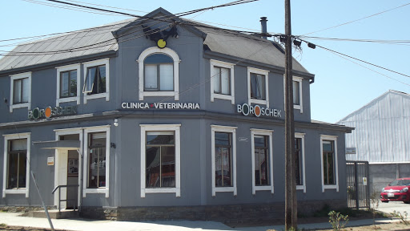

El Dr. Daniel Boroschek Krauskopf, fundador de Clínica se tituló de Medicina Veterinaria en la Universidad Austral de Chile el año 1985. Inmediatamente después de recibirse instaló su primera consulta veterinaria en la calle San Martín # 490, una pequeña sala multifunción La pequeña consulta veterinaria fue creciendo y actualmente se remoldo un antigua casona que se adapto como veterinaria en huemul 596 Valdivia
Hoy en día, nuestra Clínica Veterinaria se encuentra posicionada en la ciudad de Valdivia, como uno de los establecimientos más completos, ampliamente reconocido por la calidad del servicio que presta a sus clientes y su responsabilidad social con la región de los Ríos.
Nuestra misión es dar una atención integral y permanente a su mascota durante todos los días del año, para ello contamos con un gran equipo de profesionales dispuestos a satisfacer las necesidades de nuestros clientes y pacientes.Nos vemos como lideres en la prestacion de salud de las mascotas de Valdivia